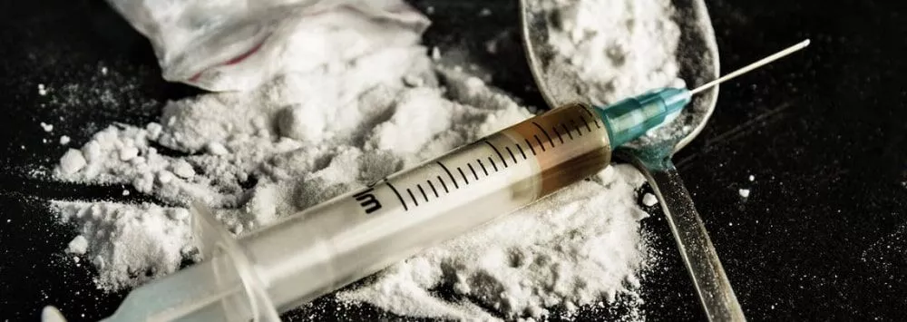

Krokodil
Clasificación: alucinógeno
La droga krokodil, también conocida como Desmorfina o la “droga caníbal”,
es un alucinógeno casero realizado a base de opiáceos que resulta hasta diez veces más fuerte
que la heroína y muchas veces más barata y tóxica. Se utiliza normalmente como sustituto de la heroína en
las zonas pobres.
 ¿Cuáles son los efectos del krokodil?
¿Cuáles son los efectos del krokodil?
Esta droga tiene unos efectos muy destructivos empezando con manchas en la piel, la cual se convierte de
color
gris y en casos extremos puede llegar a caerse dejando los huesos al descubierto.
La zona de la piel dónde se ha inyectado dicha sustancia empieza a cambiar a un color gris y escamosa.
Después de unos meses la piel y el tejido muscular comienzan a pudrirse hasta que se cae la piel dejando los
huesos a la vista.
Además, los vasos sanguíneos contiguos se rompen y provocan la necrosis del tejido.
- Pudrimiento de la piel
- Caída de los dientes
- Intoxicación de la sangre
- Tétano
Legal en España: Son legales los medicamentos que se utilizan para su fabricación
pero no es legal la droga ni su consumo.